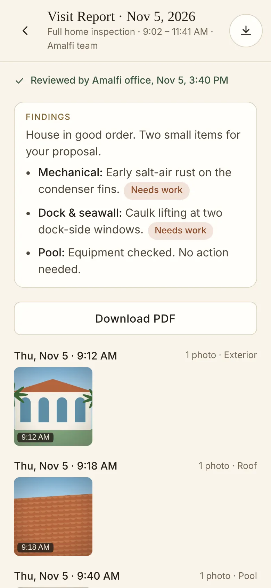
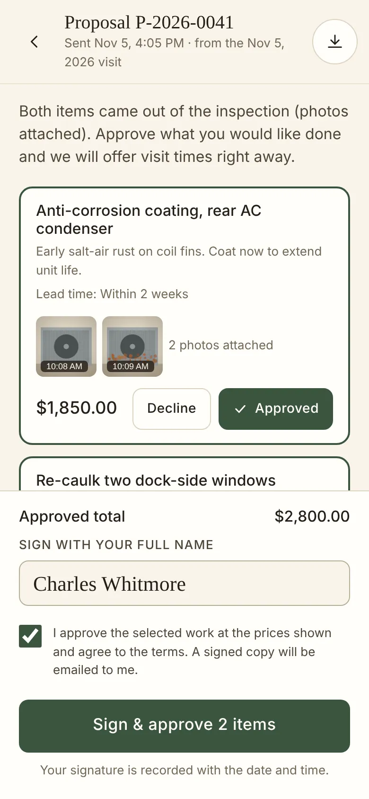
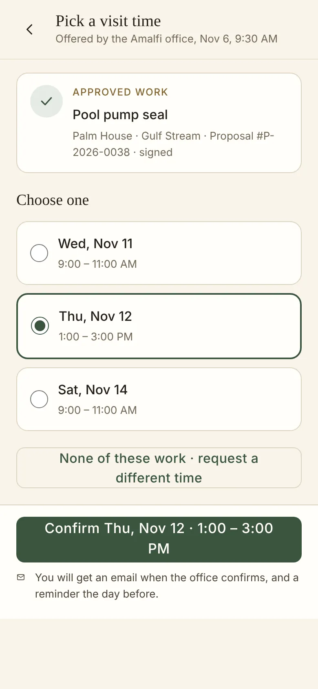
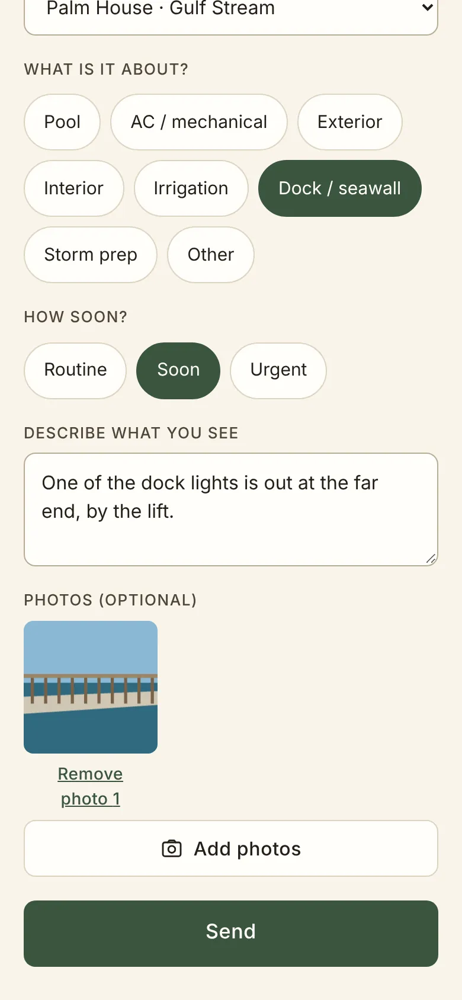
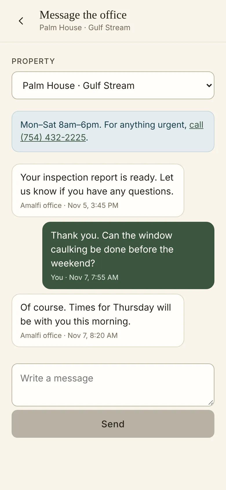

Division II · Private residences
Estates
A house on the water is under constant assault — salt, sun, wind, the fall from the trees. Left to itself, paint gives out in two seasons and a terrace greys in one. We hold the property to a written calendar so that nothing is ever left to be rescued.
The calendar
A year, written down in advance
Every property gets its own schedule, built from its exposure, its materials and its planting. This is the shape most waterfront houses take.
| Interval | Attended to |
|---|---|
| Weekly to fortnightly | Terrace, dock and walkway washing · leaf and debris clearance · pool service and chemistry · garden oversight · salt rinse after a storm or strong onshore wind |
| Monthly | Glass and screen care · exterior light check · irrigation audit · exterior condition walk with photographs |
| Quarterly | Air conditioning and dehumidification service · generator test under load · lift service coordination · condensate treatment |
| Twice yearly | Seawall, dock and lift inspection · roof and gutter clearance · hardware and fixing corrosion check |
| Before storm season | Shutters tested and serviced · loose furniture plan · drainage cleared · equipment secured and documented |
| Every two years | Exterior paint cycle · sealants and expansion joints renewed |
What we attend to
The whole property
Every estate begins with the same base — a named steward, attendance on a written interval, a condition walk with photographs, and the keys and the contractors held on your behalf. Then you choose the programmes the house actually needs. Each one is priced on its own, so you can see exactly what you are paying for and exactly what you would be giving up by taking it away. They arrive as one monthly fee, on one statement, from one firm.
Exterior preservation
Soft washing, salt rinsing, coatings, joints and roof care
- Soft washing of elevations
- Whole-house fresh-water rinse after an onshore blow
- Fresh-water rinsing of plant and metalwork
- Protective coating and repainting on a cycle
- Sealants and expansion joints renewed
- Terrace, drive and dock washing
- Roof and gutter clearance
- Historic fabric washed at preservation pressures
Window & glass
Both faces, tracks and screens
- Both faces, where access allows
- Tracks, sills and frames
- Screens removed, washed, refitted
- Mineral etching recorded before it spreads
- Large-format glass measured, not counted
Mechanical care
Air conditioning and dehumidification, serviced quarterly
- Condenser coils cleaned quarterly
- Condensate treated and flushed
- Refrigerant and electrical checks
- Protective coil coating on a cycle
- Climate and dehumidification watched
Pool & water features
Weekly chemistry and cleaning; the equipment looked after
- Weekly chemistry and cleaning
- Equipment room inspected
- Heater and automation checked
- Specialist equipment work coordinated
Grounds oversight
Your landscape crew directed and inspected to a standard
- Crews directed and the work inspected
- Bed condition and salt burn watched
- Drainage and wash after a blow
- Debris kept out of the pool and the plant
Irrigation oversight
Every zone run and watched; a failure found the week it fails
- Every zone run and watched
- Controller and rain sensor checked
- Heads and coverage inspected
- Failures reported with photographs
- Installation, repair and zone correction by Amalfi Irrigation
Dock, seawall & marine
Pilings, boat lift and seawall watched on a cycle
- Pilings, cleats and fenders inspected
- Lift serviced on a cycle
- Seawall and cap watched for spalling
- Marine trades coordinated
Storm readiness
Shutters each May, storm close, salt rinse after a blow
- Shutters serviced and tested before the season
- Pre-season inspection, every May
- Documented close before a named storm
- First look after, before you travel back
- Fresh-water salt rinse after a storm or strong onshore wind
- Water loss handled by Amalfi Restoration
Interior systems & household
Water treatment, generator, life-safety, wine room, household vendors
- Water treatment maintained
- Generator exercised under load
- Life-safety devices tested
- Wine room and specialty cooling
- Lift service and inspection coordination
- Housekeeping and household vendors coordinated
Glass protection & restoration
Etching polished out, hydrophobic coating renewed on a cycle, UV and security film
- Mineral and salt etching polished out before it is permanent
- Hydrophobic coating applied and renewed on a cycle
- Water-bead test read and recorded each visit
- Ultraviolet, solar and glare film on sun-facing elevations
- Security laminate against forced entry
- XPEL RX antimicrobial film on high-touch surfaces
- Condition of existing film and coating recorded
Systems & controls
Lighting control, audio, network, cameras and gates, tested every visit
- Camera recording played back, not viewed live
- Lighting scenes, shades and audio zones run
- Network coverage and access points checked
- Gate and garage cycled and tested
- Rack temperature, battery age and firmware logged
- Installation, upgrade and repair by Amalfi Systems & Controls
Vehicles & vessels
Cars and boats kept ready: batteries tended, started and moved, servicing and detailing coordinated
- Batteries tended and charge held
- Cars started, moved and exercised
- Pressures, fluids and covers checked
- Vessel looked over at the lift or the slip
- Servicing, detailing and transport coordinated
Glass protection & restoration
The sun does not take the glass. It takes the room.
A waterfront house is bought for its light and then quietly undone by it. Ultraviolet does most of the damage — the pale band of floor inside the sliders, the rug that fades on one side, the leather that dries, the art that has to be moved every season. It happens slowly enough that nobody notices until the thing being replaced is the furniture rather than the film. And outside the same pane, the salt is working the other way.
Restored, then sealed
Two days after a clean, the glass on this coast is grey again. An onshore wind carries salt aerosol onto every elevation, and it is not dust — it is mineral, and it draws moisture out of the air and holds it against the surface. Each time it wets and dries, a little more is left behind.
Early on, all of it washes off. Left through enough cycles, the deposit bonds, and then the alkaline minerals begin to attack the silica itself. At that point it is no longer a cleaning problem. The haze is in the glass, and on a house of floor-to-ceiling impact units the alternative to restoring it is a replacement panel, measured, ordered, craned in and re-sealed.
So we test before we clean. Wet the pane: if the marks disappear while it is wet, the mineral is sitting on the surface and the right chemistry lifts it. If they are still there when the glass is wet, it has etched, and only a cerium oxide polish will take it out — slowly, wet, at low speed, by somebody who knows that the distortion left by doing it badly is worse than the stain.
Once the glass is clean and sound, it is sealed. A professional hydrophobic coating bonds to the surface and gives the salt nothing to hold on to, so that rain and a rinse take most of it away and the clean lasts weeks rather than days. We read the water bead at each visit and record it, and renew the coating when it stops performing rather than on a guess.
Ultraviolet and solar
Applied to the inside face of the glass you already have. It stops almost all of the ultraviolet before it reaches a surface, and the heat-rejection grades cut solar gain as well — so it takes load off the air conditioning instead of adding to it.
Safety and security
A laminate that makes glass far harder to get through, and holds the pane in its frame if it does go. We fit it for forced entry and for glass retention. Florida law does not permit film to be sold as hurricane, windstorm or impact protection, and we do not sell it that way.
Privacy and surface
Frosted and decorative film where a room needs separating without building a wall. And XPEL RX on the handles, rails and touch screens of a house run with staff — a clear film carrying zinc pyrithione, an agent that inhibits the growth of microbes on the surface it covers, and which takes the daily wear those surfaces otherwise take.
We install XPEL architectural film, and XPEL RX where surfaces rather than glass are the problem. Interior window film carries XPEL’s limited lifetime residential warranty; commercial and exterior-applied films carry shorter terms, and we quote those on a replacement cycle. Film is not the whole answer — visible light and heat fade materials too, which is why the better films address those as well. But on glass that is already in the building, little else does as much for what it costs.
Historic & landmark houses
An old house is not a new house that has aged
Lime stucco is meant to breathe. Barrel tile outlives the felt beneath it. Steel casements are repairable right up until they are not. Most of the damage we are asked to look at on a 1920s house was done by somebody maintaining it the way a modern house is maintained — at four thousand pounds of pressure, with a bag of Portland cement and a film-forming sealer.
The twelve programmes run on a landmarked house too. What changes is the method, the materials and the record. On the island, so does the calendar — the Town of Palm Beach decides when the work may happen and how loud it may be.
Painting & coatings
The repaint that never becomes a project
A whole-house exterior repaint is the most disruptive and expensive thing that happens to a waterfront property on a predictable cycle, and it is almost entirely avoidable at that scale. Broken into elevations against a written schedule, the same work is maintenance.
Coatings here fail in a sequence rather than all at once. Salt sits on the seaward face and works at the adhesion. Ultraviolet chalks and fades the south and west elevations years before the north. Sealant joints go brittle and open before anything visible happens to the paint at all. Shaded elevations grow before they fade. By the time a house reads as needing painting, three of those have been running for several years and the fourth is why a section of stucco now has to be repaired before a brush can touch it.
On the calendar, each of those is caught at the start. Elevations are rinsed of salt after an onshore blow. Sealants are renewed on their own cycle rather than when they fail. One face is recoated in its own year, matched to a colour schedule and batch record we already hold, while the other three are still sound. Touch-ups happen inside a scheduled visit rather than as a mobilisation.
What does not arrive is the twelve-year event. What arrives instead is a line in a budget and a few days of work on one elevation, and a house that looks the same in year ten as it did in year two.
The client portal
Every visit, on the record
Each household has its own private portal, opened from your telephone or computer. Every visit is written up there with dated photographs, every piece of work is put to you before it begins, and the office is a message away.
We come out of a trade where nothing moves without a photograph and a signature. Houses get the same treatment.
-

Step IA report after every visit
What was found, area by area, with every photograph dated and timed. Any report can be downloaded as a PDF for your own files.
-

Step IIApprove before anything begins
Work outside the calendar comes to you as a written proposal, each item priced beside the photographs that prompted it. Approve or decline item by item, and sign on the screen.
-

Step IIIChoose the time
Once work is approved, the office offers you a choice of times. Take the one that suits the house, or ask for another.
-

Step IVAsk us to look at something
Noticed something between visits? Tell us what and how soon, and add photographs from your telephone.
-

Step VWrite to the office
Messages go straight to the office, Monday to Saturday, 8 am to 6 pm. For anything urgent, telephone.
- Private to your household
- Sign in with an emailed link or six-digit code
- No app to download
Discretion
Who comes through the gate
Every person who sets foot on the property is background-checked, uniformed and led by the same named face each visit — our own crews and the specialists we bring alike. Certificates of insurance are in your hands before the first visit, and nothing about your house is photographed, named or discussed outside it.
Vetted, every one
Background checks on every person who sets foot on the property, our own crews and the specialists we bring. Uniformed, in marked vehicles, with a named lead who is the same face each visit.
Insured properly
General liability, workers' compensation and fidelity cover, with certificates in your hands before the first visit. You should never be asked to take this on trust.
Nothing leaves the house
We do not photograph your property for marketing, name you as a client, or discuss your house with anyone. If we ever ask to, it will be in writing and you may simply say no.
Questions
Before you call
How is estate care priced?
A monthly retainer covers the calendar, the stewardship and the reporting, sized to the property. Work outside the calendar — a repair, a repaint, a replacement — is quoted in writing before it begins. Specialist work we coordinate is passed through at cost with a disclosed coordination fee, never a hidden margin.
Why does a waterfront property need more maintenance than an inland one?
Salt drives chloride into metal and masonry, the sun at this latitude breaks down coatings far faster than further north, and humidity feeds mildew on any surface left damp. A coating good for seven years inland can fail in two on the water. The answer is a shorter cycle, not a better product.
What happens to the house while we are away for the season?
House watch on an agreed interval: a walk of the interior and exterior, systems checked, water and climate confirmed, post and deliveries handled, and a written report with photographs after each visit. If something is wrong you hear from us the same hour, wherever you are.
How do we get into the client portal?
By invitation, once the house is in our care. There is no public sign-up: the office opens a portal for your household and sends an invitation by email to each person you name, such as a house manager. You sign in with a link or a six-digit code sent to that address, so there is no password to keep.
Is there a charge for the portal?
No. It comes with estate care, for every house we look after.
Do we need to download an app?
No. The portal works in the browser on any telephone, tablet or computer. On a telephone you can add it to your home screen, and from then on it opens like an app.
Can you take over from our existing pool service, landscaper and painter?
Often. Many houses already have a pool service, a landscaper and a painter who each do good work and none of whom speak to each other. We are happy to keep good vendors in place and simply hold the calendar, the quality and the single statement.
Will you manage a renovation on the property?
The finish scopes — paint, flooring, cabinetry, tile and stone, plaster and stucco — are performed by our own people under a separate scope. Anything in a licensed trade is contracted by you directly with a contractor licensed in that trade, and scheduled into the same calendar.
Do you service the air conditioning, or only the exterior?
Both. Air conditioning, dehumidification, generator testing and wine-room cooling sit inside the estate calendar, serviced quarterly. Where a house carries equipment of a commercial size — a central plant, a large generator, three-phase distribution — the work is performed by Amalfi Mechanical under the same statement, so you are still dealing with one steward. Lift service is a licensed trade: we hold the schedule, book the inspection and meet the engineer, and the lift company contracts directly with you.
Which parts of South Florida do you cover for estate care?
Nine counties: Palm Beach, Broward, Miami-Dade and Monroe on the Atlantic, and Manatee, Sarasota, Charlotte, Lee and Collier on the Gulf. Broward and Palm Beach are the core; the Gulf coast and the Keys are served on scheduled runs. Response targets county by county are on the coverage page.
Where we work
Waterfront, on both coasts
Estate care runs the length of the service area — the Isles and Rio Vista in Fort Lauderdale, the barrier island at Miami Beach, the Intracoastal at Boca Raton and Delray Beach, the island at West Palm Beach, Hillsboro at Pompano Beach, and on the Gulf, Port Royal and Aqualane Shores at Naples, the canals at Fort Myers and the keys at Sarasota.
Field notes
Further reading
Longer pieces on the problems behind this work, each checked against primary sources.
Buying a waterfront home: what comes after closing
An inspection report answers whether to buy. It does not tell a new owner what the house needs, where anything is, or when it was last touched — and on the water that gap is wider than it looks.
Read → EstatesClosing a waterfront estate before a storm
A working checklist with a timeline — before the season, at seventy-two hours, at the dock, while the house is empty, and the order of re-entry afterwards.
Read → CoatingsThe wall has to breathe, and the paint decides whether it can
Why lime stucco was built to get wet, what sealing it does over the following five years, and how to tell what is already on your wall before anyone quotes.
Read → MaintenanceThe maintenance record nobody is keeping
Most buildings here are maintained; far fewer can prove it. What belongs in a maintenance file, why ten good vendors still leave gaps at the seams, and what the missing record costs.
Read →Enquiries
Begin with a walkthrough
A walk of the exterior, the systems and the waterfront structures, written up with a recommended calendar of care. No cost, and the report is yours regardless.